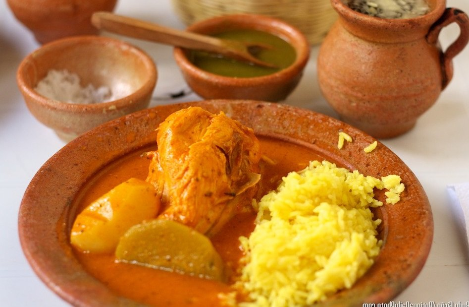
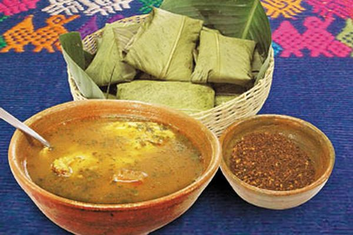
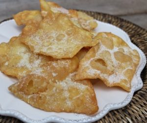
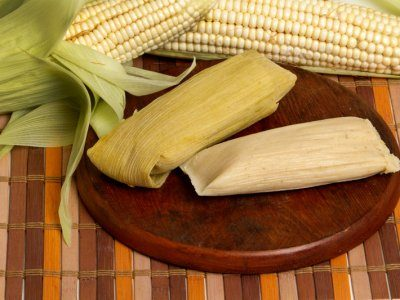

En esta región hay una gran variedad de platillos que son muy sencillos de preparar. A continuación veremos las mejores recetas típicas de Santa Rosa.
Esta es una de las comidas típicas de Santa Rosa más populares que existe. Contiene un guiso con mucha carne y picante que muchos ven como un platillo tradicional, ya que es una de las recetas más antiguas de Guatemala.

El caldo de pollo es un platillo tradicional en todo Guatemala, generalmente es preparado en la hora del almuerzo. Es una receta muy sencilla de preparar y con un sabor único, es un platillo que no puede faltar en tu mesa.

Este es un postre muy rico que puedes comer a cualquier hora. Suele prepararse en familia para mantener a la familia unida, es una receta deliciosa muy sencilla de preparar.

Los tamalitos de elote es un platillo que se suele preparar por temporada. Esta comida típica de Santa Rosa se hace con maíz fresco, tiene un sabor un poco dulce y son muy fáciles de preparar.
